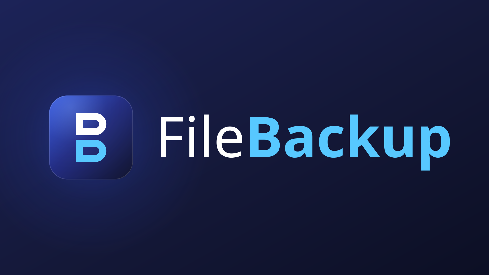
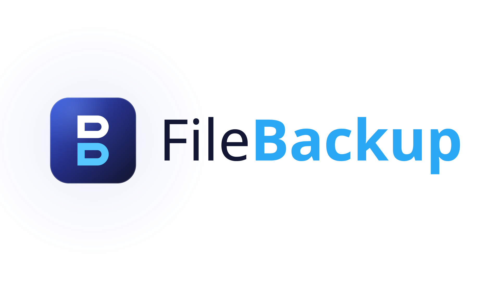
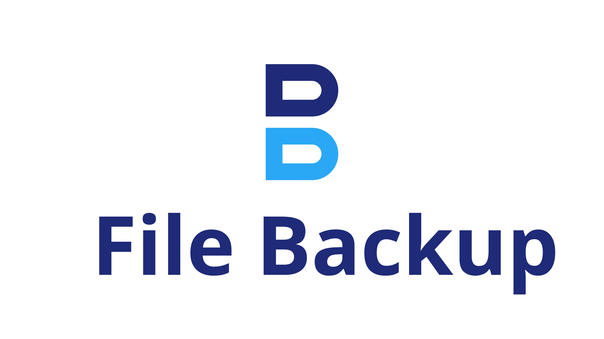
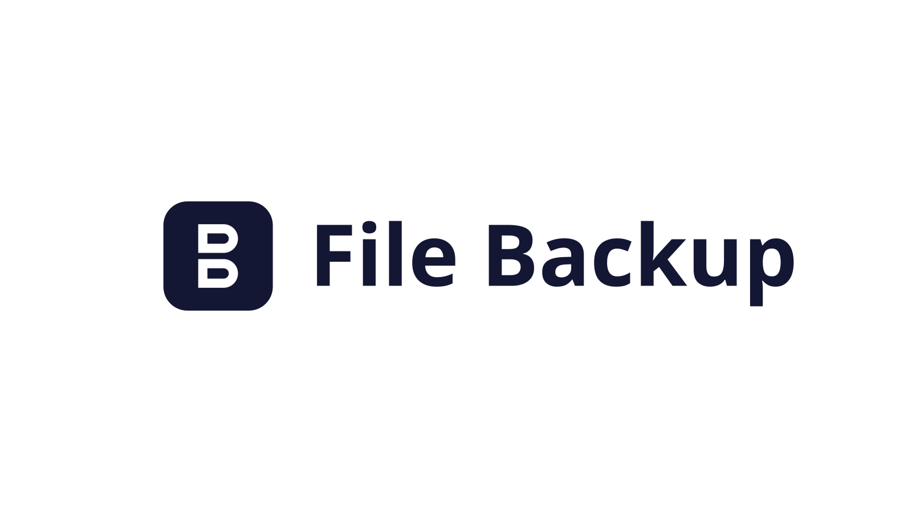

App icon & logo system
File Backup
Two stacked vault plates, drawn as one continuous monogram. A gradient tile for the launcher, a two-tone glyph for everything that has to stay transparent — and one wordmark typeset in Segoe UI that matches the Windows desktop app.
01 — Icon
The mark survives every size
One tile, one monogram, four finishes. Pick the finish by context, never by taste: gradient on the launcher, flat for print, two-tone on transparent surfaces, single-colour wherever colour is not available.
-
Primary gradient tile
Rounded tile, three-stop indigo gradient with a top-left sheen and a 14% inner hairline. The default icon on Windows, in the store listing and in marketing.
-
Solid indigo tile
The same tile flattened to
#141733. Use where a gradient would band, dither or cost ink — print, embroidery and single-pass rendering. -
Two-tone glyph
Transparent monogram, ink
#1F2A78over accent#2AA8F5. For light surfaces that already carry their own container or shadow. -
Monochrome glyph
Drawn with
currentColor, so it inherits whatever it is placed in. One colour, no fallback, no exceptions.
02 — Logo
Lockups, and when to use them
The wordmark pairs Segoe UI Regular (400) for File with Segoe UI Semibold (600) for Backup. The weight shift is the only emphasis device — no underline, no colour fill on the whole name.

Horizontal · on dark
Primary lockup. Deep indigo field, white File, cyan Backup. Splash screens, dark UI, presentations.

Horizontal · on light
Same lockup for paper and light UI. Ink #141733 for File, #2AA8F5 — not the bright cyan — for Backup.

Stacked
Square-ish footprint for covers, avatars and tiles too narrow for the horizontal lockup.

Monochrome lockup
Single-colour tile plus currentColor wordmark. Faxes, stamps, one-colour print and legal footers.
Do
- Keep clear space of at least half the tile height on every side.
- Scale the lockup proportionally — width and height move together.
- Below 120 px of lockup width, drop the wordmark and use the tile alone.
- Below 16 px, switch to the solid tile so the monogram stays legible.
Don't
- Recolour the monogram, or fill the whole name in cyan.
- Rotate, skew, stretch or add a drop shadow to the tile.
- Place the glyph directly on a busy photograph without a container.
- Rebuild the wordmark in another typeface — it is Segoe UI, weights 400 and 600.
03 — Colour
Indigo, and one cyan
Indigo carries the mass, cyan carries the signal. Select any swatch to copy its hex value.
Tile gradient
Stop 0 → 0.46 → 1, running diagonally across the tile.
Accent
Cyan 300 on dark, Cyan 500 on light. Sheen and glow are light effects, not fills.
Surface
The deep field behind the lockups.
Ink
Monogram and wordmark on light surfaces.
04 — Type
Segoe UI, two weights
The wordmark is typeset in Segoe UI — the same family the desktop application renders in, so the logo and the product never disagree. Only 400 and 600 are used.
Wordmark · 260 / 400 · 600
File Backup
Display · 40 / 600
Scheduled backups, silently.
Heading · 24 / 600
Differential runs copy only what changed.
Body · 16 / 400
Backup files are written directly to the destination you choose, so the folder stays a readable mirror of the source. Manifests and run history live in AppData instead.
Caption · 12 / 400 · 0.08em
FULL BACKUP · 02:00 · 1 284 FILES · 4.6 GB
05 — Product
What the brand is a brand of
File Backup is a .NET 8 WPF desktop application. The icon system above ships with it — the mark is the same geometry the app draws at runtime.
-
Backup jobs
Point any source at any destination, name it, and switch it on or off.
-
Flexible schedules
Daily, weekly on a chosen weekday, or monthly on a chosen date — each at its own HH:mm.
-
Full & differential
Copy everything, or only what changed since the last full backup.
-
Restore
Pick a job, a backup set and a target folder. The base full set is applied first.
-
History & logs
Every run is recorded with type, status, file count, bytes and duration.
-
System tray
Closing the window minimises to the tray, and schedules keep firing.
- Copy everything. Every file under the source is written to the destination, preserving the directory structure.
- Stamp the set. The run is written as
Full_yyyyMMdd_HHmmss. - Record a manifest. Relative path, size and last-write time for every file captured.
- Load the baseline. The most recent
Full_*manifest is read from AppData. - Compare. Each source file is checked against the baseline by size and last-write time.
- Copy the delta. Only new and changed files reach the destination.
- No full set yet? The first run is promoted to a full backup automatically.
- Choose a set. Sets are listed newest first.
- Apply the base. For a differential set, its full backup is restored first.
- Apply the delta. Differential files are layered on top, reconstructing that moment.
06 — Assets
Download the system
Eight files, all vector, all hand-authored — no bitmap upscaling anywhere in the set.
-
Download
Primary gradient tile
-
Download
Solid indigo tile
-
Download
Two-tone glyph
-
Download
Monochrome glyph
-
Download
Horizontal lockup · dark
-
Download
Horizontal lockup · light
-
Download
Stacked lockup
-
Download
Monochrome lockup
{kind=link}
{kind=link}
{kind=link}
{kind=link}
{kind=link}
{kind=link}
{kind=link}
{kind=link}
The application consumes the same geometry: AppIcon rebuilds the tile and monogram
from the identical path data at runtime, so the taskbar, tray, window and installer all show
the mark above rather than a redrawn approximation.